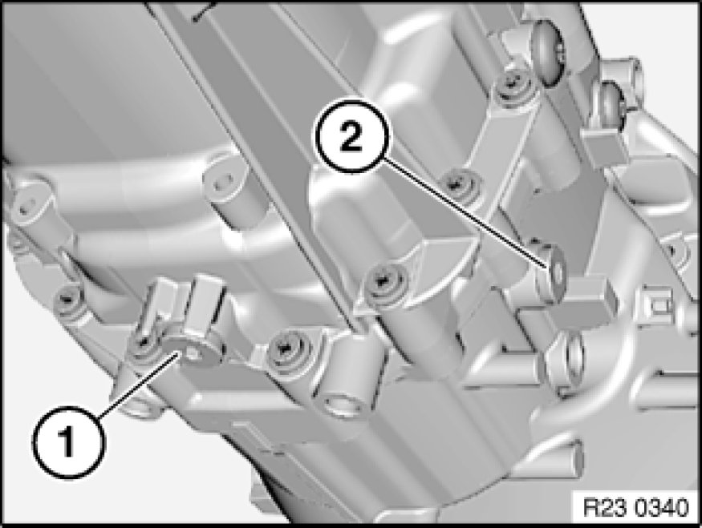

Procedures
00 11.. ... - Draining/topping up gear oil in manual transmission
Note:
Gearbox must be at normal operating temperature.
Gear oil:
- Refer to BMW Service Operating Fluids.
Filling capacities:
- Refer to Technical Data.

Draining gear oil:
- Release oil drain plug (1) and filler plug (2).
- Clean oil drain plug (1) and screw in.
Tightening torque 23 00 4AZ Transmission in General.
Fill transmission with ATF.
- Pour in gear oil until overflowing.
- Tighten in filler screw (2).
Tightening torque: 23 00 4AZ. Transmission in General